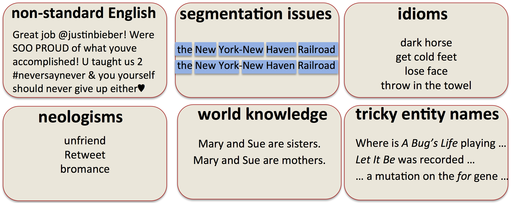

最近开始学习自然语言处理，斯坦福Jurafsky教授在coursera的这门课程很适合入门，遂将学习笔记整理成一个系列，便于以后复习查看。
Course Introduciton
NLP可以做什么
- Question Answering:比如IBM Waton问答系统。
- Information Extraction:提取一封邮件里面的时间、地点、事项。
- Sentiment Analysis:比如对购物网站上一款相机的评论进行分析，发现消费者对这款相机的评论好坏。
- Machine Translation：比如Google翻译，输入中文，翻译成英文。
NLP的发展如何

1.基本已解决的问题
- Spam detection
- Part-of-speech(POS) tagging
- Named entity recognition(NER)
2.研究有进展的问题
- Sentiment analysis
- Coreference resolution
- Word sence disambiugation
- Parsing
- Machine translation(MT)
- Information extraction(IE)
3.仍然很难的问题
- Question answering
- Paraphase
- Summarization
- Dialog
语言的模糊性（Ambiguity)
比如下面这句话
Violinist Linked to JAL Crash Blossoms
可以这样理解【Violinist Linked to】JAL Crash Blossoms,或者这样理解【Violinist Linked to JAL Crash】 Blossoms
NLP为什么困难

- 非标准用语。比如很多网络用语，简写等。
- 分割问题。
- 谚语。
- 旧词新意。
- 现实世界的知识。
- 专有名词。
课程主要内容
1.NLP的理论和方法
- Viterbi
- Naïve Bayes, Maxent classifiers
- N-gram language modeling
- StaIsIcal Parsing
- Inverted index, y-idf, vector models of meaning
2.现实应用
- InformaIon extracIon
- Spelling correcIon
- InformaIon retrieval
- SenIment analysis
Basic Text Processing
正则表达式
- [ ] 匹配”[ ]”中任意一个字符
| Pattern | Matches |
|---|---|
| [wW]oodchuck | Woodchuck, woodchuck |
| [1234567890] | any digit |
- Ranges [A-Z]
| Pattern | Matches |
|---|---|
| [A-Z] | 任何一个大写字母 |
| [a-z] | 任何一个小写字母 |
| [0-9] | 任何一个数字 |
- ^ 表示否定，即不含哪些字符，当且仅当
"^"位于[ ]里其处于第一个字符处。
| Pattern | Matches |
|---|---|
| [^A-Z] | 任何一个非大写字母字符 |
| [^Ss] | 任何一个非”S”或”s”字符 |
| [^e^] | 任何一个非”e”或非”^”字符 |
| a^b | a^b |
- | 管道符号，表示“或”
| Pattern | Matches | ||
|---|---|---|---|
| yours \ | mine | yours mine | |
| a \ | b \ | c | =[abc] |
- ? * + .
| Pattern | Matches | |
|---|---|---|
| color?r | 有或者没有前面字符 | color colour |
| oo*h! | 有0个或0个以上前面的字符 | oh! ooh! oooh! … |
| o+h! | 有1个或1个以上前面的字符 | color clour |
| beg.n | 任一字符 | begin begun beg2n … |
- ^ 以什么开头， $ 以什么结尾
| Pattern | Matches | |
|---|---|---|
| ^[A-Z] | 大写字母开头的字符 | Palo Alto |
| .$ | 以.结尾的字符 | The end. |
| .$ | 任一结尾的字符 | The end? The end! |
- 例子：找到一段文本中的所有单词
the
因为是单词“the”,所以要剔除诸如”there”或者”blithe”这样的情况,还要注意”The”的情况。
|
|
Word tokenization
- Type : an element of the vocabulary.
- Token : an instance of what type in running text.
简而言之，Type就是去重后的单词数；Token是没有去重的字数。
|
|